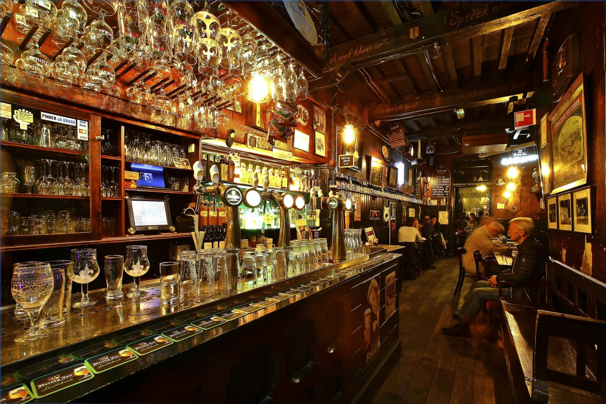

Hey there! Do you write stories, novels or poems? Do you want to get started with creative writing? Do you want to meet others that are into writing as well?
Then the Delft Creative Writing Community could be a great place for you! We meet every Wednesday at Bierhuis De Klomp, in the city centre of Delft. Hop by!
An evening with us
The evening starts with a short writing workshop or otherwise some cozy chitchat from 19:30 to 20:00. After that, there is free writing until 22:00. During this time you can work on any of your own writing projects — a novel, short stories, fiction, non-fiction, drawing comics, or anything else, really! Most members write in English, but you are welcome to write in whatever language you like!
Critique sessions
On the first Wednesday of the month we hold a critique session. Members can, if they want to, submit a piece of up to 2500 words. Attendees will then read and review each other's work beforehand and give each other feedback during the session. Any kind of creative submission is welcome; academic texts are not. Taking part in the critique sessions is of course entirely optional.
Joining us
The group has no membership fee and we welcome newcomers throughout the year. So just hop by whenever! Of course, if you decide to join a session, De Klomp will appreciate it if you buy a drink.
During holidays De Klomp is sometimes closed. When that happens, there is no writing session that Wednesday.
Where to find us
Address: Bierhuis De Klomp · Binnenwatersloot 5, Delft. Typically, we sit around the large table in the back. So you may not immediately see us when you enter!